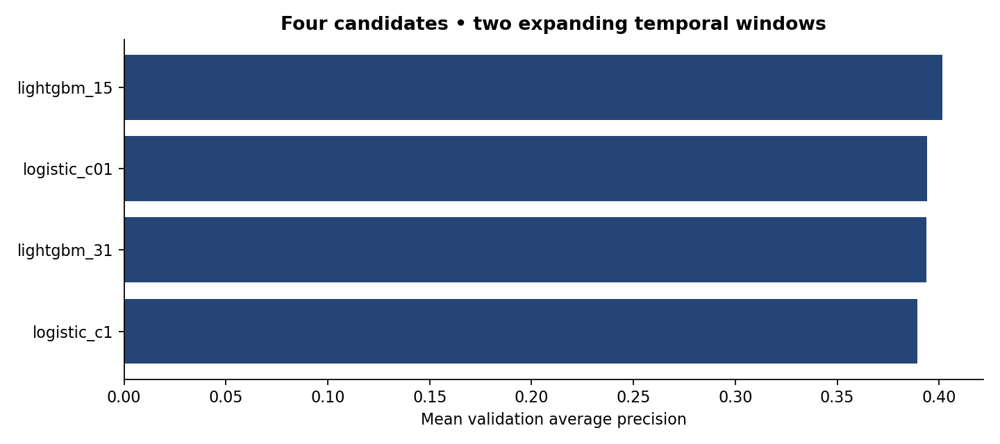
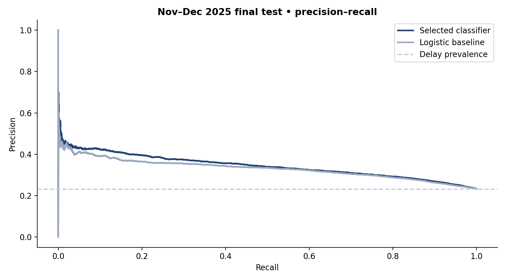
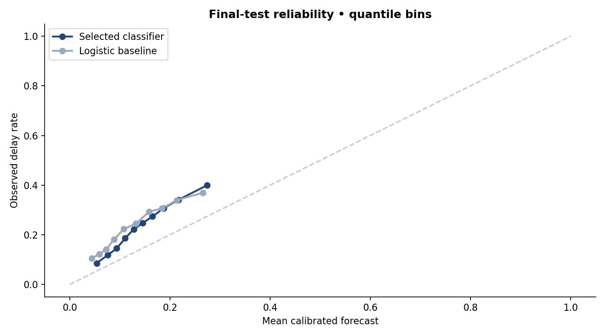
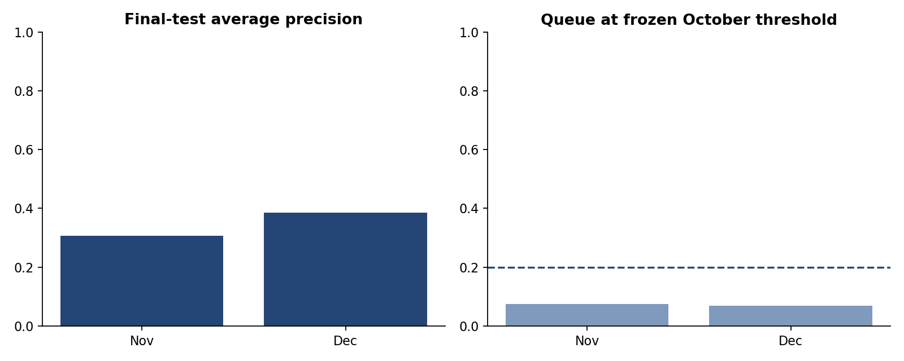

01 / BUSINESS UNDERSTANDING
Problem and decision
A capacity-limited team needs to prioritize flights for monitoring and communication. The target is departure delay ≥15 minutes (BTS DepDel15), not arrival delay. The model recognizes historical associations; it does not establish that flagging a flight reduces its delay.
02 / DATA UNDERSTANDING & PREPARATION
Data and prediction time
BTS Reporting Carrier On-Time Performance: 12 monthly files from 2025, 7,001,619 source records. Sample of 15,000 flights per month, 180,000 total, selected by lowest SHA256 keys without consulting the target. Reported domestic operated flights with observed departures; cancellations excluded, diversions retained when departure labels exist.
Inputs: carrier, origin/destination airports, scheduled time, month, weekday, distance and scheduled duration. Time and month use cyclic representations. Actual times, delay causes, taxiing and cancellation status are excluded from features. Files are retrospective: schedule fields were not audited as snapshots known at prediction time.
03 / MODELING
Models and freezing
Four candidates: two logistic regressions and two LightGBM models. Two expanding windows: Jan–Apr → May–Jun and Jan–Jun → Jul–Aug. Mean average-precision selection: lightgbm_15. Refit on Jan–Aug (120,000 flights); September calibration (15,000); threshold at October 80th percentile (15,000). Final test only on November–December (30,000), after freezing.

04 / EVALUATION
Results on a later period
The selected model outperformed logistic regression in final-test AP. Ranking improvement is modest and the October threshold lost coverage: it flagged 12.8% of final-test delays. Revalidate before operational use.
| Model | AP | ROC AUC | Brier ↓ | Precision@20% | Recall@20% | Lift@20% |
|---|---|---|---|---|---|---|
| lightgbm_15 | 0.343 | 0.655 | 0.178 | 37.0% | 31.8% | 1.59× |
| Logistic baseline | 0.330 | 0.644 | 0.181 | 35.4% | 30.5% | 1.52× |
AP = average precision. Final-test delay prevalence: 23.3%. AP difference selected − baseline: +0.013; bootstrap 95%: [+0.004, +0.023]. 300 paired day-block resamples; dependence between days not modeled.


Frozen threshold: 0.251; final-test queue: 7.1%; precision: 41.6%; recall: 12.8%. This threshold does not guarantee a 20% future queue.

05 / HISTORICAL CAPACITY SCENARIO
Monitoring capacity
Choose the share of 30,000 final-test flights to monitor using model ranking. This scenario uses historical outcomes and is separate from the frozen threshold. It is not new optimization or a real-operation guarantee.
06 / LIMITATIONS & DEPLOYMENT
Limits and pilot
One seed, one year and US domestic flights. Months have equal sample sizes, unlike actual national traffic weights. No weather forecasts, real-time conditions or aircraft rotation history. Does not cover cancellations, establish performance in another year or measure savings/ROI. Calibration and queue size may drift over time.
Next step: evaluate another year/season, validate feature availability at prediction time and pilot with humans. Measure alert precision, missed delays, workload and intervention effects. The local app supports inference; this page is a historical diagnostic.
Notebook ↗Model card ↗